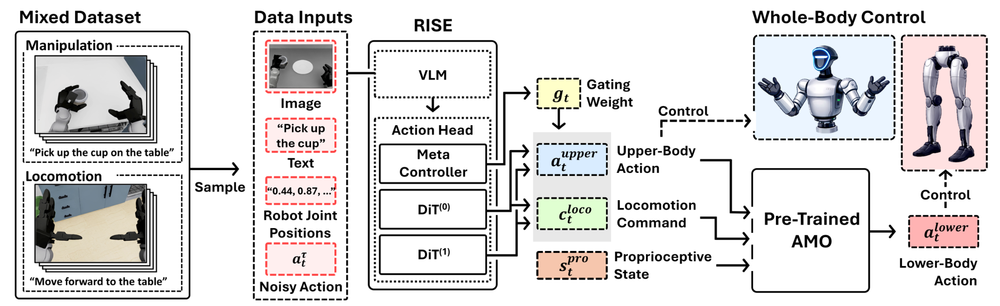
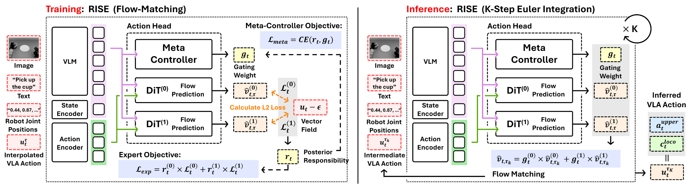

We present Responsibility-Induced Specialized Experts (RISE), a multi-expert Vision-Language-Action framework for learning long-horizon humanoid loco-manipulation from segmented locomotion- and manipulation-oriented demonstrations. RISE induces behavior-specialized experts according to how accurately each expert reconstructs the demonstrated action, enabling a single policy to model heterogeneous whole-body behaviors without requiring long-horizon demonstrations containing explicit behavior transitions.
RISE uses a shared vision-language backbone with multiple action experts and a meta-controller. Given the visual observation, language instruction, and robot state, the VLA module predicts an upper-body action together with a high-level locomotion command. A pre-trained locomotion policy then produces the corresponding lower-body action for whole-body humanoid control.

During training, RISE assigns each expert a responsibility based on its flow-matching reconstruction error. Experts that better explain a demonstrated action receive larger updates, encouraging specialization into different behavior patterns such as locomotion- and manipulation-dominant motions. The meta-controller learns to predict these expert weights from the shared representation.
Because the learned gating weights change with the dominant behavior, they also provide a useful signal for detecting subtask transitions. This lets RISE compose segmented demonstrations into long-horizon loco-manipulation sequences at inference time.

We evaluate RISE on compositional humanoid loco-manipulation tasks in simulation, combining segmented locomotion and manipulation behaviors into multi-step move, pick, and place sequences.
We further evaluate RISE on a real Unitree G1 humanoid, executing long-horizon loco-manipulation sequences that require repeated transitions between whole-body locomotion and dexterous manipulation.
@inproceedings{kee2026rise,
title = {Learning Humanoid Loco-Manipulation with Responsibility-Induced Specialized Experts for Vision-Language-Action Models},
author = {Kee, Hogun and Oh, Wooseok and Kim, Jooyoung and Jeong, Jaeyeon and Jung, Hyewoo and Son, Hyeondal and Lee, Hosung and Kang, Minjae and Oh, Songhwai},
booktitle = {IEEE/RSJ International Conference on Intelligent Robots and Systems (IROS)},
year = {2026},
note = {Accepted}
}